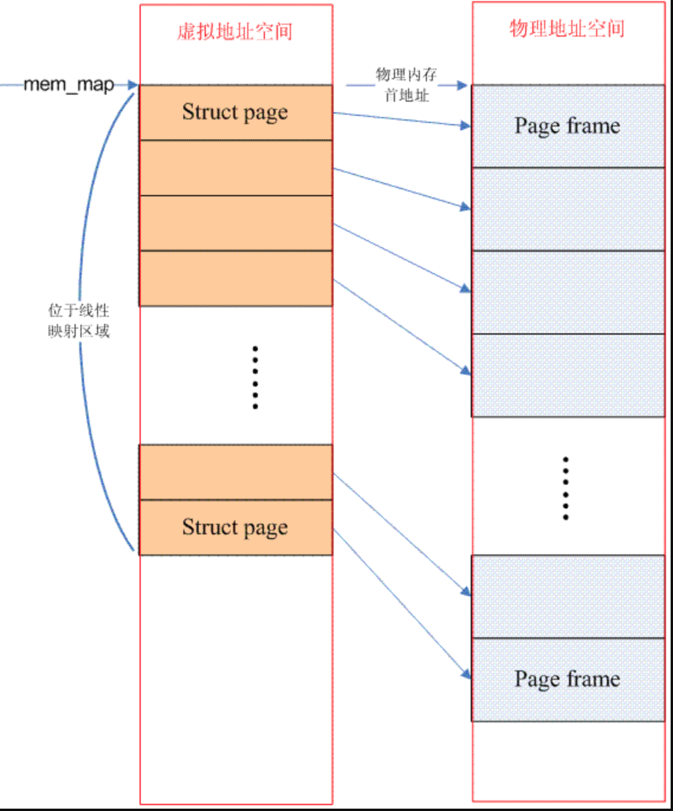
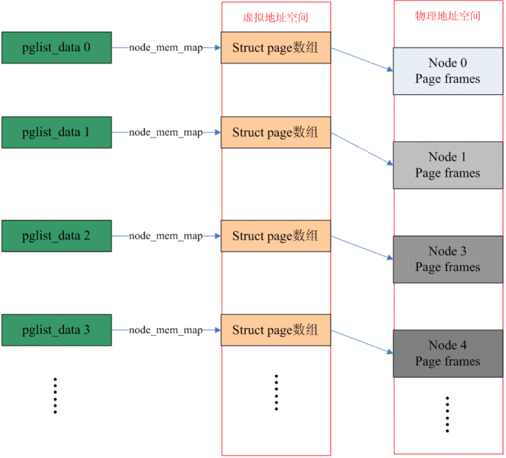
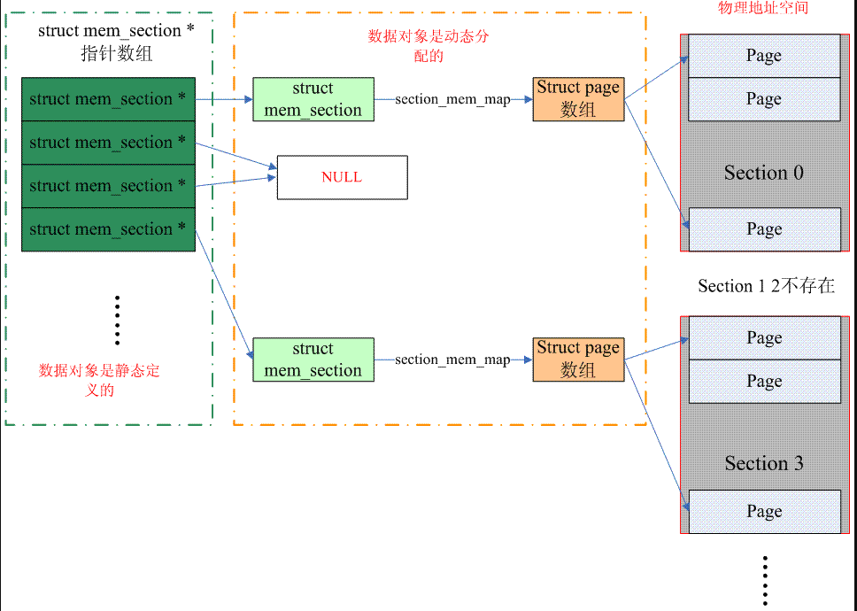
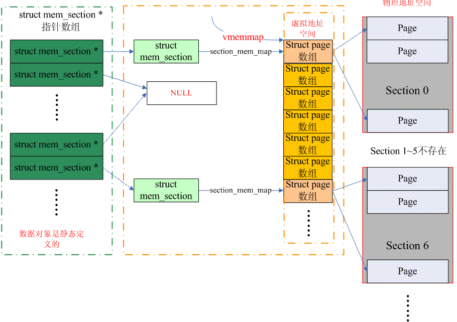

Linux内存模型分析
Contents
本文转载于：http://www.wowotech.net/memory_management/memory_model.html
在原文的基础上，做了如下的改动：
- 文中出现的内核代码修改成基于
4.4.128 - 对于体系结构相关的代码,使用
x86架构中的代码 - 对代码格式进行调整
- 会添加一些内容，便于更进一步的理解
一、前言
在linux内核中支持3种内存模型，分别是flat memory model，Discontiguous memory model和sparse memory model。所谓memory model，其实就是从cpu的角度看，其物理内存的分布情况，在linux kernel中，使用什么的方式来管理这些物理内存。另外，需要说明的是：本文主要focus在share memory的系统，也就是说所有的CPUs共享一片物理地址空间的。
本文的内容安排如下：为了能够清楚的解析内存模型，我们对一些基本的术语进行了描述，这在第二章。第三章则对三种内存模型的工作原理进行阐述，最后一章是代码解析，代码来自4.4.128内核，对于体系结构相关的代码，我们采用x86进行分析。
二、和内存模型相关的术语
1、什么是page frame？
操作系统最重要的作用之一就是管理计算机系统中的各种资源，做为最重要的资源：内存，我们必须管理起来。在linux操作系统中，物理内存是按照page size来管理的，具体page size是多少是和硬件以及linux系统配置相关的，4k是最经典的设定。因此，对于物理内存，我们将其分成一个个按page size排列的page，每一个物理内存中的page size的内存区域我们称之page frame。我们针对每一个物理的page frame建立一个struct page的数据结构来跟踪每一个物理页面的使用情况：是用于内核的正文段？还是用于进程的页表？是用于各种file cache还是处于free状态……
每一个page frame有一个一一对应的page数据结构，系统中定义了page_to_pfn和pfn_to_page的宏用来在page frame number和page数据结构之间进行转换，具体如何转换是和memory modle相关，我们会在第三章详细描述linux kernel中的3种内存模型。
2、什么是PFN？
对于一个计算机系统，其整个物理地址空间应该是从0开始，到实际系统能支持的最大物理空间为止的一段地址空间。在ARM系统中，假设物理地址是32个bit，那么其物理地址空间就是4G，在ARM64系统中，如果支持的物理地址bit数目是48个，那么其物理地址空间就是256T。当然，实际上这么大的物理地址空间并不是都用于内存，有些也属于I/O空间（当然，有些cpu arch有自己独立的io address space）。因此，内存所占据的物理地址空间应该是一个有限的区间，不可能覆盖整个物理地址空间。不过，现在由于内存越来越大，对于32位系统，4G的物理地址空间已经无法满足内存的需求，因此会有high memory这个概念，后续会详细描述。
PFN是page frame number的缩写，所谓page frame，就是针对物理内存而言的，把物理内存分成一个个的page size的区域，并且给每一个page 编号，这个号码就是PFN。假设物理内存从0地址开始，那么PFN等于0的那个页帧就是0地址（物理地址）开始的那个page。假设物理内存从x地址开始，那么第一个页帧号码就是（x>>PAGE_SHIFT）。
3、什么是NUMA？
在为multiprocessors系统设计内存架构的时候有两种选择：一种就是UMA（Uniform memory access），系统中的所有的processor共享一个统一的，一致的物理内存空间，无论从哪一个processor发起访问，对内存地址的访问时间都是一样的。NUMA（Non-uniform memory access）和UMA不同，对某个内存地址的访问是和该memory与processor之间的相对位置有关的。例如，对于某个节点（node）上的processor而言，访问local memory要比访问那些remote memory的速度要快。
三、Linux 内核中的三种memory model
1、什么是FLAT memory model？
如果从系统中任意一个processor的角度来看，当它访问物理内存的时候，物理地址空间是一个连续的，没有空洞的地址空间，那么这种计算机系统的内存模型就是Flat memory。这种内存模型下，物理内存的管理比较简单，每一个物理页帧都会有一个page数据结构来抽象，因此系统中存在一个struct page的数组（mem_map），每一个数组条目指向一个实际的物理页帧（page frame）。在flat memory的情况下，PFN（page frame number）和mem_map数组index的关系是线性的（有一个固定偏移，如果内存对应的物理地址等于0，那么PFN就是数组index）。因此从PFN到对应的page数据结构是非常容易的，反之亦然，具体可以参考page_to_pfn和pfn_to_page的定义。此外，对于flat memory model，节点（struct pglist_data）只有一个（为了和Discontiguous Memory Model采用同样的机制）。下面的图片描述了flat memory的情况：

需要强调的是struct page所占用的内存位于直接映射（directly mapped）区间，因此操作系统不需要再为其建立page table。
2、什么是Discontiguous Memory Model？
如果cpu在访问物理内存的时候，其地址空间有一些空洞，是不连续的，那么这种计算机系统的内存模型就是Discontiguous memory。一般而言，NUMA架构的计算机系统的memory model都是选择Discontiguous Memory，不过，这两个概念其实是不同的。NUMA强调的是memory和processor的位置关系，和内存模型其实是没有关系的，只不过，由于同一node上的memory和processor有更紧密的耦合关系（访问更快），因此需要多个node来管理。Discontiguous memory本质上是flat memory内存模型的扩展，整个物理内存的address space大部分是成片的大块内存，中间会有一些空洞，每一个成片的memory address space属于一个node（如果局限在一个node内部，其内存模型是flat memory）。下面的图片描述了Discontiguous memory的情况：

因此，这种内存模型下，节点数据（struct pglist_data）有多个，宏定义NODE_DATA可以得到指定节点的struct pglist_data。而，每个节点管理的物理内存保存在struct pglist_data 数据结构的node_mem_map成员中（概念类似flat memory中的mem_map）。这时候，从PFN转换到具体的struct page会稍微复杂一点，我们首先要从PFN得到node ID，然后根据这个ID找到对于的pglist_data 数据结构，也就找到了对应的page数组，之后的方法就类似flat memory了。
3、什么是Sparse Memory Model？
Memory model也是一个演进过程，刚开始的时候，使用flat memory去抽象一个连续的内存地址空间（mem_maps[]），出现NUMA之后，整个不连续的内存空间被分成若干个node，每个node上是连续的内存地址空间，也就是说，原来的单一的一个mem_maps[]变成了若干个mem_maps[]了。一切看起来已经完美了，但是memory hotplug的出现让原来完美的设计变得不完美了，因为即便是一个node中的mem_maps[]也有可能是不连续了。其实，在出现了sparse memory之后，Discontiguous memory内存模型已经不是那么重要了，按理说sparse memory最终可以替代Discontiguous memory的，这个替代过程正在进行中，4.4的内核仍然是有3种内存模型可以选择。
为什么说sparse memory最终可以替代Discontiguous memory呢？实际上在sparse memory内存模型下，连续的地址空间按照SECTION（例如1G）被分成了一段一段的，其中每一section都是hotplug的，因此sparse memory下，内存地址空间可以被切分的更细，支持更离散的Discontiguous memory。此外，在sparse memory没有出现之前，NUMA和Discontiguous memory总是剪不断，理还乱的关系：NUMA并没有规定其内存的连续性，而Discontiguous memory系统也并非一定是NUMA系统，但是这两种配置都是multi node的。有了sparse memory之后，我们终于可以把内存的连续性和NUMA的概念剥离开来：一个NUMA系统可以是flat memory，也可以是sparse memory，而一个sparse memory系统可以是NUMA，也可以是UMA的。
下面的图片说明了sparse memory是如何管理page frame的（配置了SPARSEMEM_EXTREME）：

（注意：上图中的一个mem_section指针应该指向一个page，而一个page中有若干个struct mem_section数据单元）
整个连续的物理地址空间是按照一个section一个section来切断的，每一个section内部，其memory是连续的（即符合flat memory的特点），因此，mem_map的page数组依附于section结构（struct mem_section）而不是node结构了（struct pglist_data）。当然，无论哪一种memory model，都需要处理PFN和page之间的对应关系，只不过sparse memory多了一个section的概念，让转换变成了PFN<--->Section<--->page。
我们首先看看如何从PFN到page结构的转换：kernel中静态定义了一个mem_section的指针数组，一个section中往往包括多个page，因此需要通过右移将PFN转换成section number，用section number做为index在mem_section指针数组可以找到该PFN对应的section数据结构。找到section之后，沿着其section_mem_map就可以找到对应的page数据结构。顺便一提的是，在开始的时候，sparse memory使用了一维的memory_section数组（不是指针数组），这样的实现对于特别稀疏（CONFIG_SPARSEMEM_EXTREME）的系统非常浪费内存。此外，保存指针对hotplug的支持是比较方便的，指针等于NULL就意味着该section不存在。上面的图片描述的是一维mem_section指针数组的情况（配置了SPARSEMEM_EXTREME），对于非SPARSEMEM_EXTREME配置，概念是类似的，具体操作大家可以自行阅读代码。
从page到PFN稍微有一点麻烦实际上PFN分成两个部分：一部分是section index，另外一个部分是page在该section的偏移。我们需要首先从page得到section index，也就得到对应的memory_section，知道了memory_section也就知道该page在section_mem_map，也就知道了page在该section的偏移，最后可以合成PFN。
对于page到section index的转换，sparse memory有2种方案，我们先看看经典的方案，也就是保存在page->flags中（配置了SECTION_IN_PAGE_FLAGS）。这种方法的最大的问题是page->flags中的bit数目不一定够用，因为这个flag中承载了太多的信息，各种page flag，node id，zone id现在又增加一个section id，在不同的architecture中无法实现一致性的算法，有没有一种通用的算法呢？这就是CONFIG_SPARSEMEM_VMEMMAP。具体的算法可以参考下图：

（上面的图片有一点问题，vmemmap只有在PHYS_OFFSET等于0的情况下才指向第一个struct page数组，一般而言，应该有一个offset的，不过，懒得改了，哈哈）
对于经典的sparse memory模型，一个section的struct page数组所占用的内存来自directly mapped区域，页表在初始化的时候就建立好了，分配了page frame也就是分配了虚拟地址。但是，对于SPARSEMEM_VMEMMAP而言，虚拟地址一开始就分配好了，是vmemmap开始的一段连续的虚拟地址空间，每一个page都有一个对应的struct page，当然，只有虚拟地址，没有物理地址。因此，当一个section被发现后，可以立刻找到对应的struct page的虚拟地址，当然，还需要分配一个物理的page frame，然后建立页表什么的，因此，对于这种sparse memory，开销会稍微大一些（多了个建立映射的过程）。
四、代码分析
我们的代码分析主要是通过 include/asm-generic/memory_model.h(line 32)展开的。
1、flat memory。
代码如下： include/asm-generic/memory_model.h(line 32)
#define __pfn_to_page(pfn) (mem_map + ((pfn) - ARCH_PFN_OFFSET))
#define __page_to_pfn(page) ((unsigned long)((page) - mem_map) + \
ARCH_PFN_OFFSET)
由代码可知，PFN和struct page数组（mem_map）index是线性关系，有一个固定的偏移就是ARCH_PFN_OFFSET，这个偏移是和估计的architecture有关。
2、Discontiguous Memory Model
代码如下： include/asm-generic/memory_model.h(line 37)
#define __pfn_to_page(pfn) \
({ unsigned long __pfn = (pfn); \
unsigned long __nid = arch_pfn_to_nid(__pfn); \
NODE_DATA(__nid)->node_mem_map + arch_local_page_offset(__pfn, __nid);\
})
#define __page_to_pfn(pg) \
({ const struct page *__pg = (pg); \
struct pglist_data *__pgdat = NODE_DATA(page_to_nid(__pg)); \
(unsigned long)(__pg - __pgdat->node_mem_map) + \
__pgdat->node_start_pfn; \
})
Discontiguous Memory Model需要获取node id，只要找到node id，一切都好办了，比对flat memory model进行就OK了。因此对于__pfn_to_page的定义，可以首先通过arch_pfn_to_nid将PFN转换成node id，通过NODE_DATA宏定义可以找到该node对应的pglist_data数据结构，该数据结构的node_start_pfn记录了该node的第一个page frame number，因此，也就可以得到其对应struct page在node_mem_map的偏移。__page_to_pfn类似，大家可以自己分析。
3、Sparse Memory Model
经典算法的代码我们就不看了，一起看看配置了SPARSEMEM_VMEMMAP的代码，如下：
/* memmap is virtually contiguous. */
#define __pfn_to_page(pfn) (vmemmap + (pfn))
#define __page_to_pfn(page) (unsigned long)((page) - vmemmap)
简单而清晰，PFN就是vmemmap这个struct page数组的index啊。对于x86而言，vmemmap定义如下：
#define vmemmap ((struct page *)VMEMMAP_START)
#define VMEMMAP_START _AC(0xffffea0000000000, UL)
毫无疑问，我们需要在虚拟地址空间中分配一段地址来安放struct page数组（该数组包含了所有物理内存跨度空间page），也就是VMEMMAP_START的定义。